A Száguldó Cirkusz pályái
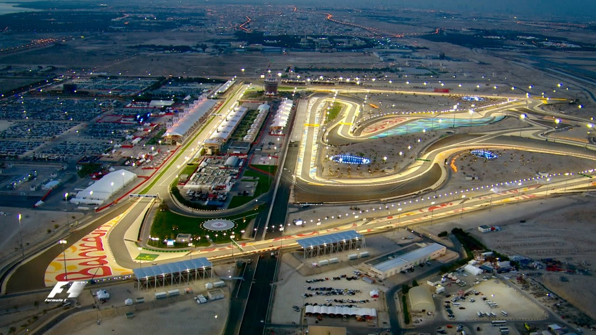
Bahrain International Circuit
- Helyszín: Bahrain, Szahír
- Első nagydíj: 2004
- Hossz: 5.412 km
- Kanyarok száma: 15
- Legutolsó győztes: Charles Leclerc(2022)
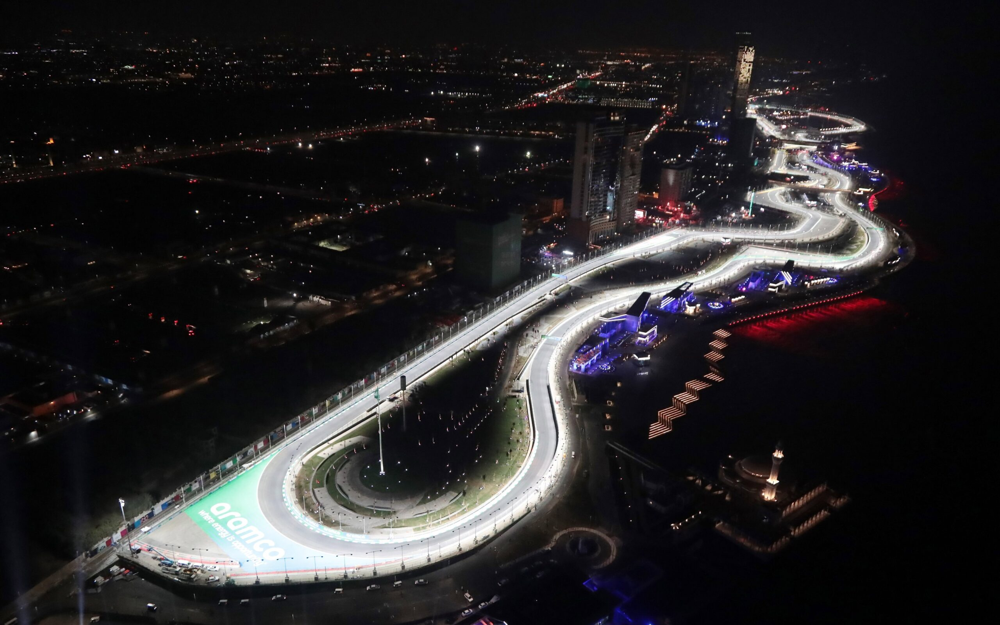
Jeddah Corniche Circuit
- Helyszín: Szaúd-Arábia, Dzsidda
-
- Első nagydíj: 2021
- Hossz: 6.174 km
- Kanyarok száma: 27
- Legutolsó győztes: Max Verstappen(2022)

Albert Park Circuit
- Helyszín: Ausztrália, Melbourne

- Első nagydíj: 1996
- Hossz: 5.278 km
- Kanyarok száma: 16
- Legutolsó győztes: Charles Leclerc(2022)
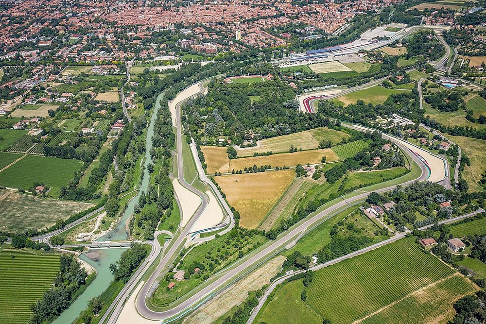
The Autodromo Internazionale Enzo e Dino Ferrari
- Helyszín: Olaszország, Imola

- Első nagydíj: 1980
- Hossz: 4.909 km
- Kanyarok száma: 19
- Legutolsó győztes: Max Verstappen(2022)
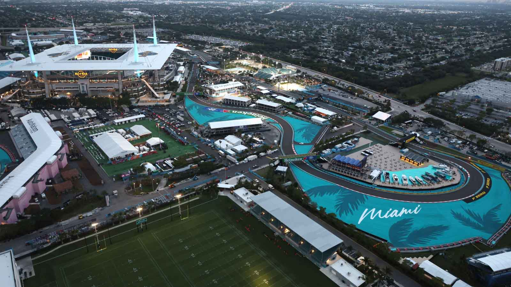
Miami International Autodrome
- Helyszín: USA, Miami

- Első nagydíj: 2022
- Hossz: 5.412 km
- Kanyarok száma: 19
- Legutolsó győztes: Max Verstappen(2022)
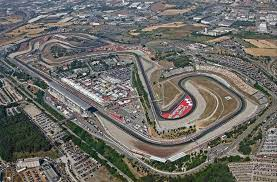
Circuit de Barcelona-Catalunya
- Helyszín: Spanyolország, Barcelona

- Első nagydíj: 1951
- Hossz: 4.675 km
- Kanyarok száma: 16
- Legutolsó győztes: Max Verstappen(2022)
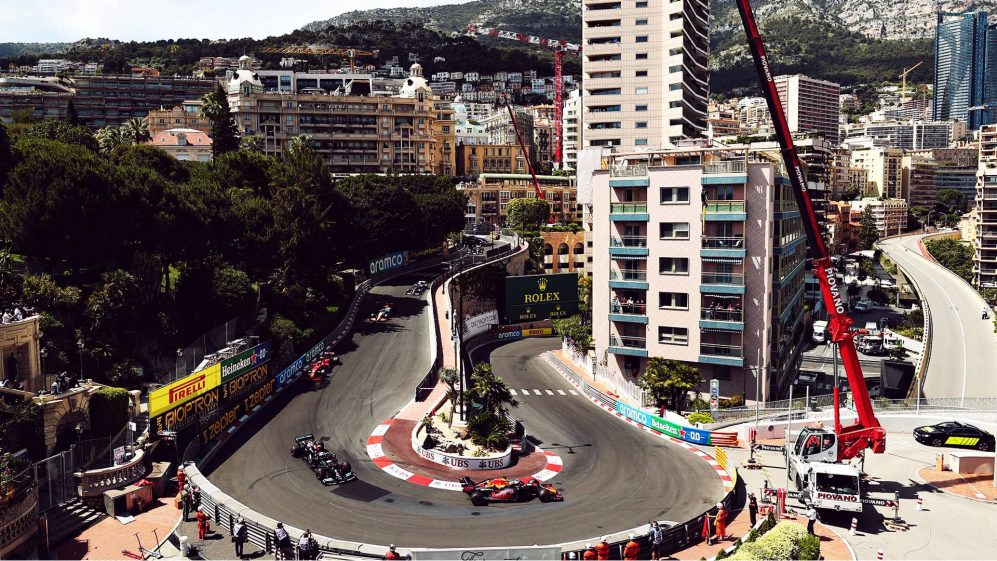
Circuit de Monaco
- Helyszín: Monaco
- 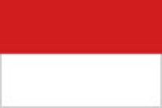
- Első nagydíj: 1950
- Hossz: 3.337 km
- Kanyarok száma: 19
- Legutolsó győztes: Sergio Pérez(2022)
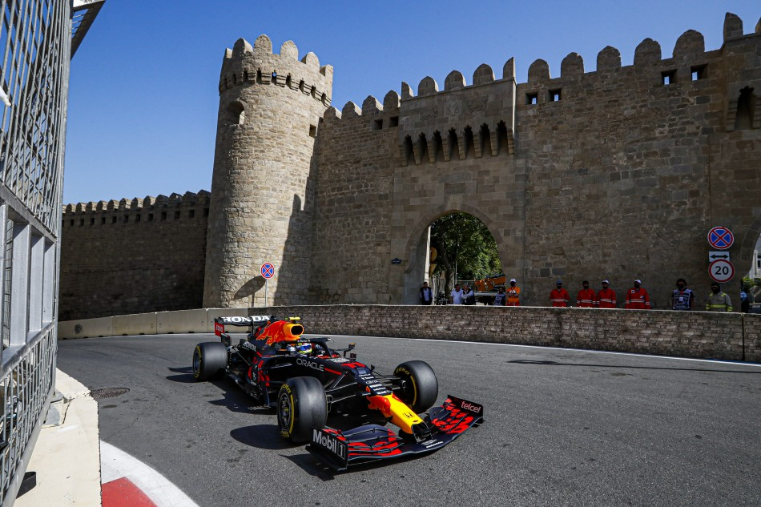
Baku City Circuit
- Helyszín: Azerbajdzsán, Baku
- 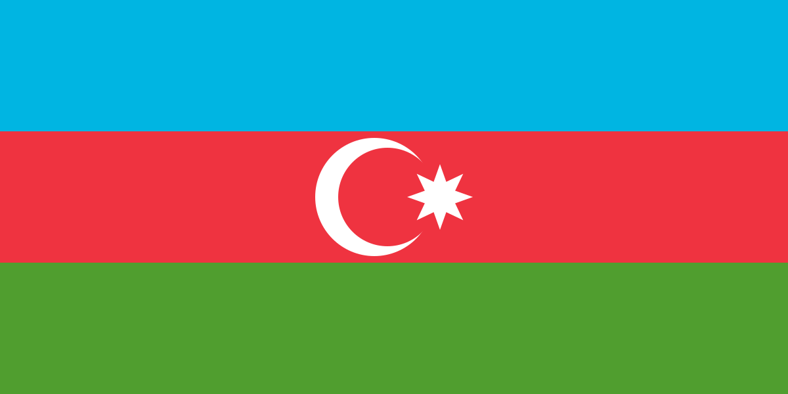
- Első nagydíj: 2016
- Hossz: 6.003 km
- Kanyarok száma: 20
- Legutolsó győztes: Max Verstappen(2022)
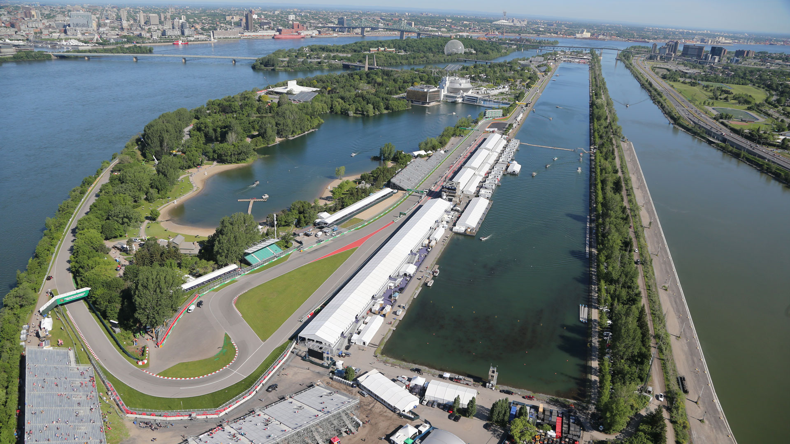
Circuit Gilles-Villeneuve
- Helyszín: Kanada, Montreal

- Első nagydíj: 1978
- Hossz: 4.361 km
- Kanyarok száma: 15
- Legutolsó győztes: Max Verstappen(2022)
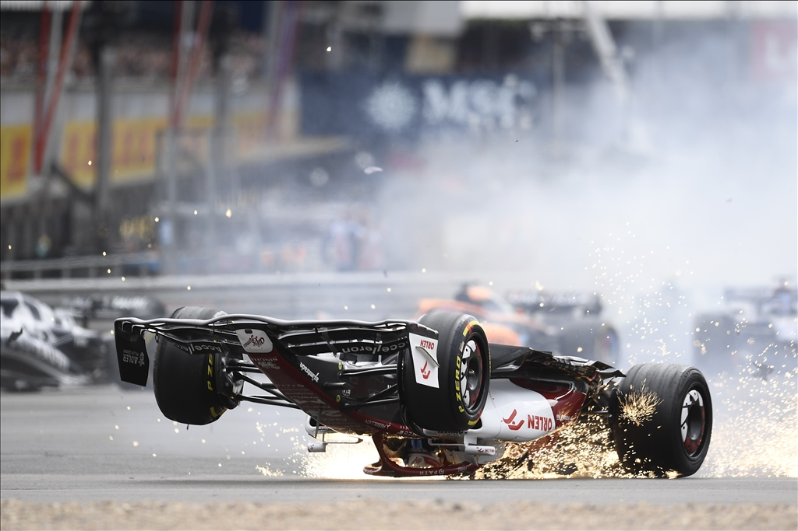
Silverstone Circuit
- Helyszín: Nagy-Britannia, Silverstone

- Első nagydíj: 1950
- Hossz: 5.891 km
- Kanyarok száma: 18
- Legutolsó győztes: Carlos Sainz(2022)

Red Bull Ring
- Helyszín: Ausztria, Spielberg
- Első nagydíj: 2014
- Hossz: 4.326 km
- Kanyarok száma: 10
- Legutolsó győztes: Charles Leclerc(2022)
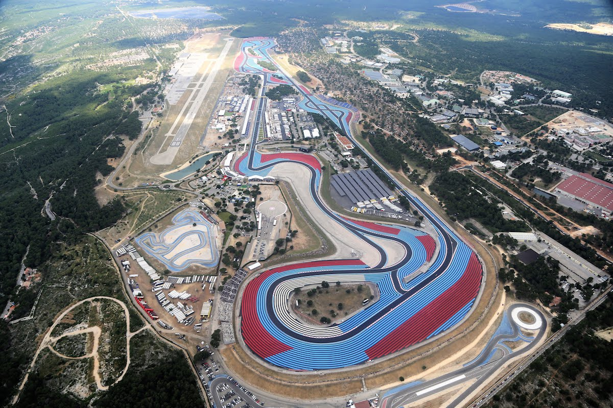
Circuit Paul Ricard
- Helyszín: Franciaország, Le Castellet

- Első nagydíj: 1971
- Hossz: 5.842 km
- Kanyarok száma: 15
- Legutolsó győztes: Max Verstappen(2022)

Hungaroring
- Helyszín: Magyarország, Mogyoród
- Első nagydíj: 1986
- Hossz: 4.381 km
- Kanyarok száma: 14
- Legutolsó győztes: Max Verstappen(2022)
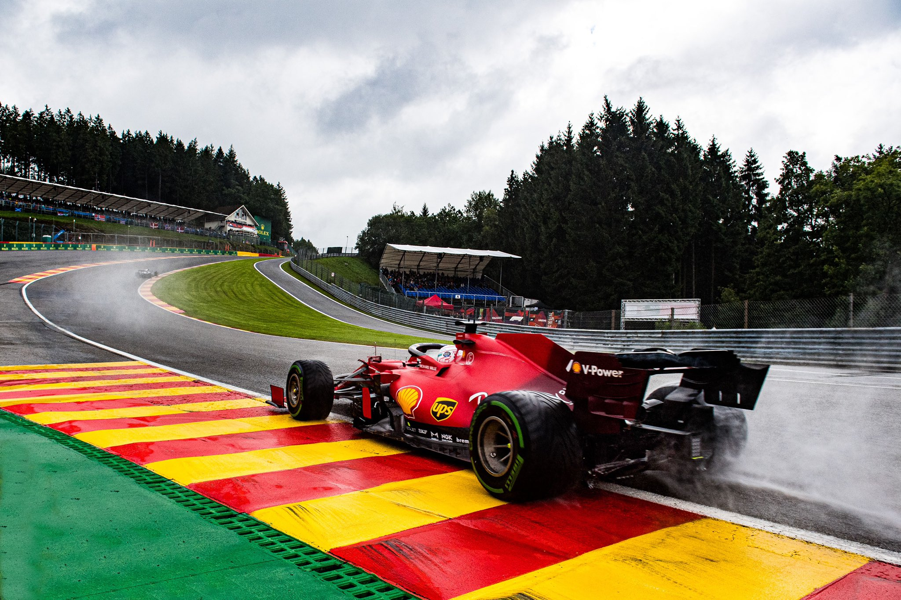
Circuit de Spa-Francorchamps
- Helyszín: Belgium, Spa-Francorchamps
- 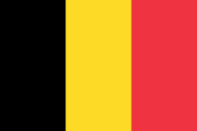
- Első nagydíj: 1950
- Hossz: 7.004 km
- Kanyarok száma: 20
- Legutolsó győztes: Max Verstappen(2022)
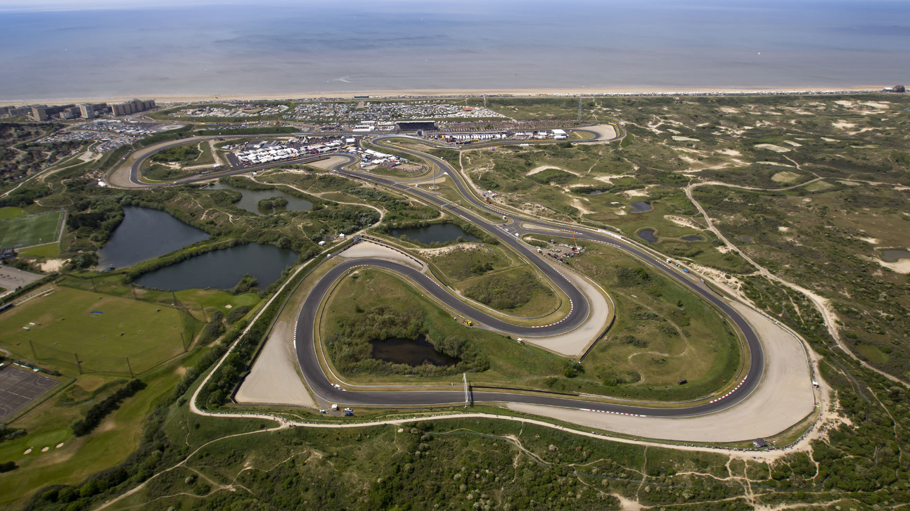
Circuit Zandvoort
- Helyszín: Hollandia, Zandvoort

- Első nagydíj: 1959
- Hossz: 4.259 km
- Kanyarok száma: 14
- Legutolsó győztes: Max Verstappen(2022)
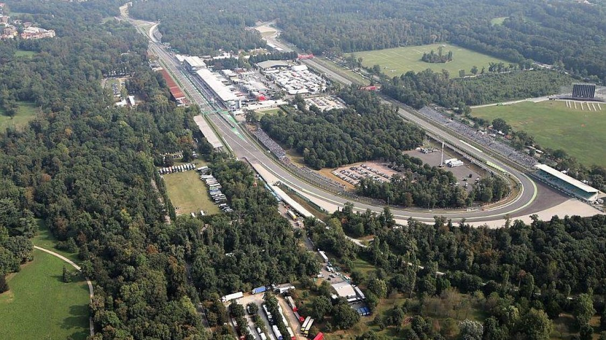
Autodromo Nazionale di Monza
- Helyszín: Olaszország, Monza
- Első nagydíj: 1950
- Hossz: 5.793 km
- Kanyarok száma: 11
- Legutolsó győztes: Max Verstappen(2022)
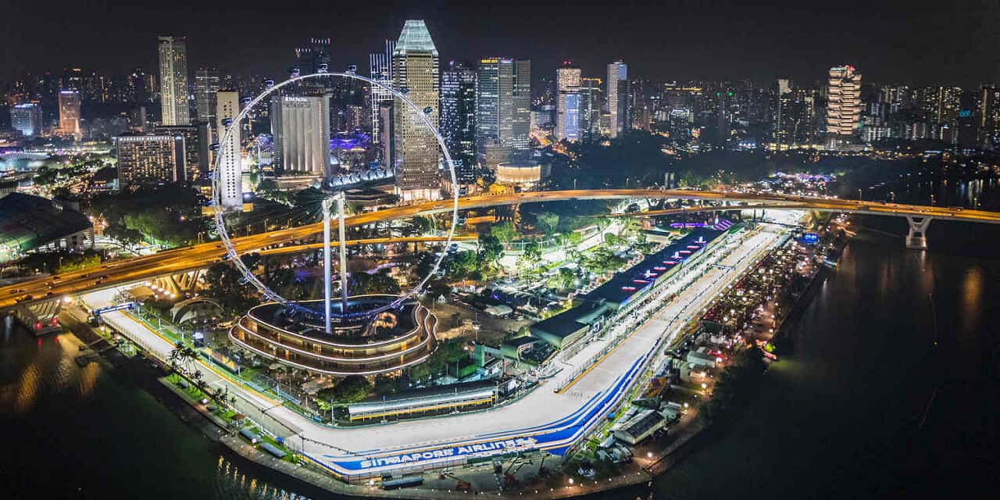
Marina Bay Street Circuit
- Helyszín: Szingapúr
- Első nagydíj: 2008
- Hossz: 5.066 km
- Kanyarok száma: 24
- Legutolsó győztes: Sebastian Vettel(2019)
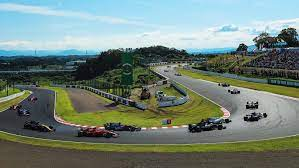
Suzuka International Racing Course
- Helyszín: Japán, Suzuka

- Első nagydíj: 1987
- Hossz: 5.807 km
- Kanyarok száma: 18
- Legutolsó győztes: Valteri Bottas(2019)
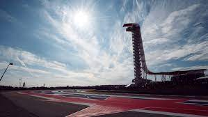
Circuit of the Americas
- Helyszín: USA, Austin
- Első nagydíj: 2012
- Hossz: 5.516 km
- Kanyarok száma: 20
- Legutolsó győztes: Max Verstappen(2021)
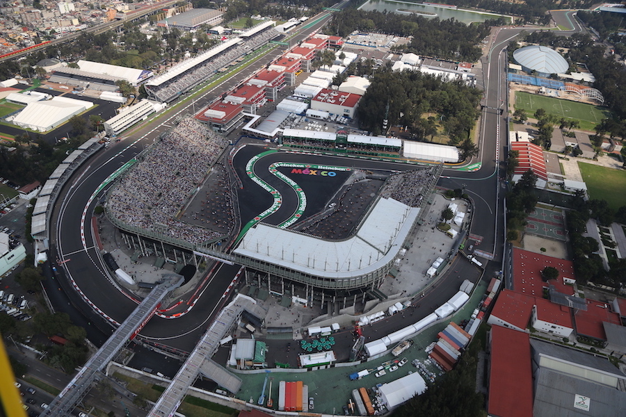
Autódromo Hermanos Rodríguez
- Helyszín: Mexikó, Mexikóváros

- Első nagydíj: 1962
- Hossz: 4.304 km
- Kanyarok száma: 17
- Legutolsó győztes: Max Verstappen(2021)

Autodromo José Carlos Pace
- Helyszín: Brazília, Interlagos
- 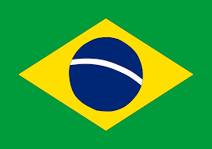
- Első nagydíj: 1973
- Hossz: 4.308 km
- Kanyarok száma: 15
- Legutolsó győztes: Lewis Hamilton(2021)
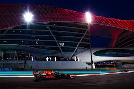
Yas Marina Circuit
- Helyszín: UAE, Abu-Dzabi
- Első nagydíj: 2009
- Hossz: 5.554 km
- Kanyarok száma: 16
- Legutolsó győztes: Max Verstappen(2021)